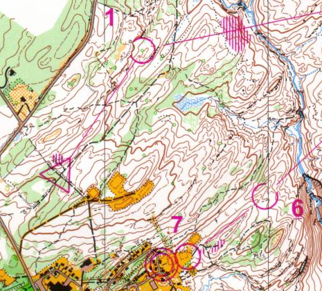
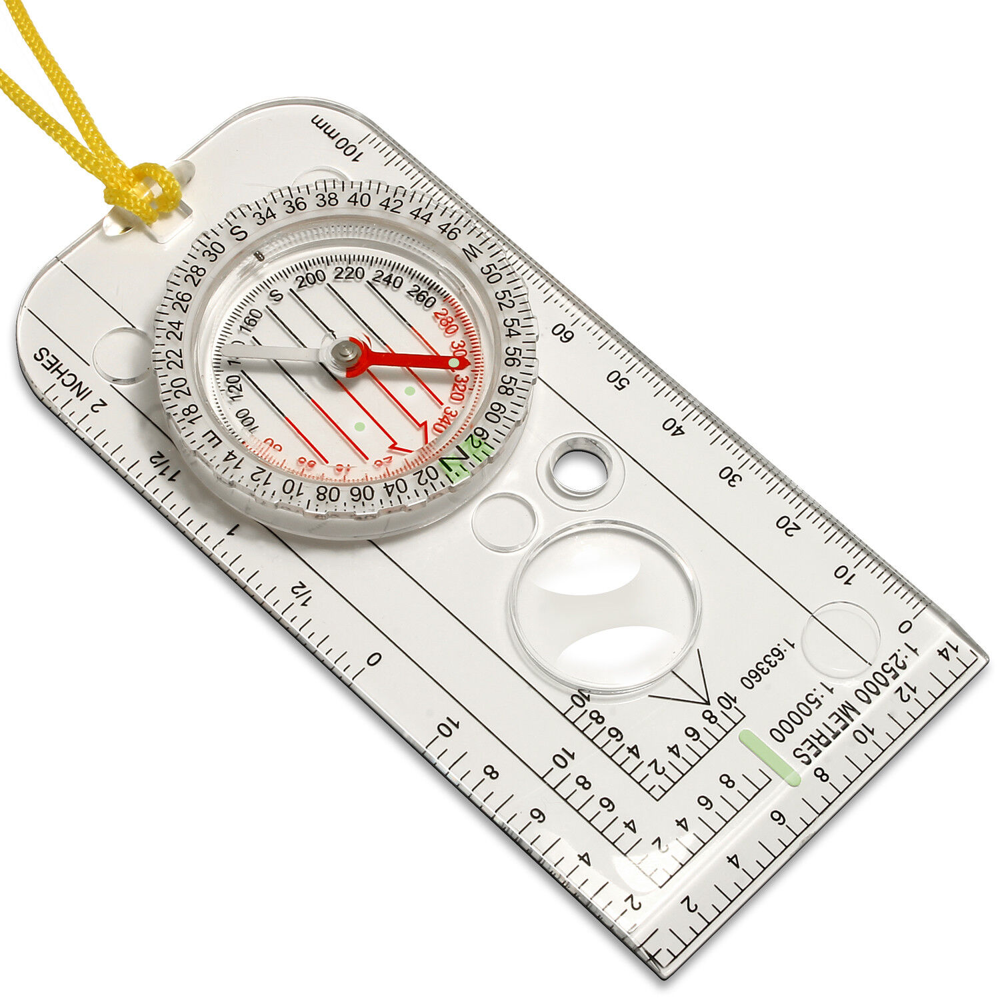
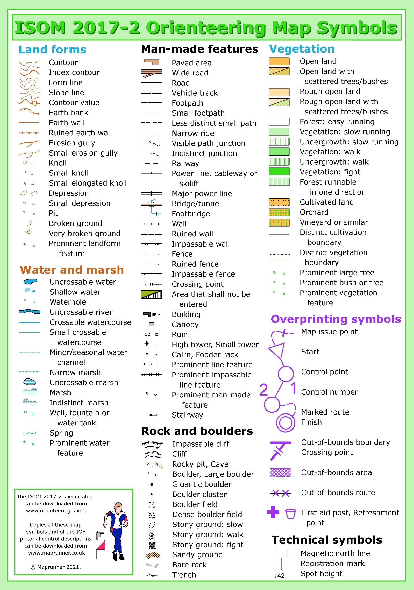

Here I'll give a basic overview of what skills go into orienteering and how to use them. Here are the basic, most important concepts and parts that make up orienteering:
Orienteering map:
An orienteering map is a highly detailed topographical and environmental map that spcifies the type of terrain, the land features, and various manmade features as well. Here is an example of an orienteering map:

Orienteering compass:
An orienteering compass is a special transparent compass with paralell lines running through a rotating central piece. This design allows the user to take a precise bearing toward a given direction. Here is an example of an orienteering compass:

Control descriptions:
A control description is a special list of all the control points on a course with some specific information about where to find each point.
Attack point:
An attack point is some land feature an orienteer uses to find a control.
Map legend/understanding the map:
Each color and symbol on an orienteering map has a specific meaning, allowing an orienteer to know exactly where they need to go. Here is a legend for an orienteering map:

Traditional course levels:
The traditional course level order is: white (beginner), yellow (advanced beginner), orange (intermediate), brown (short advanced), green (medium advanced), red (long advanced), and blue (extra long advanced).